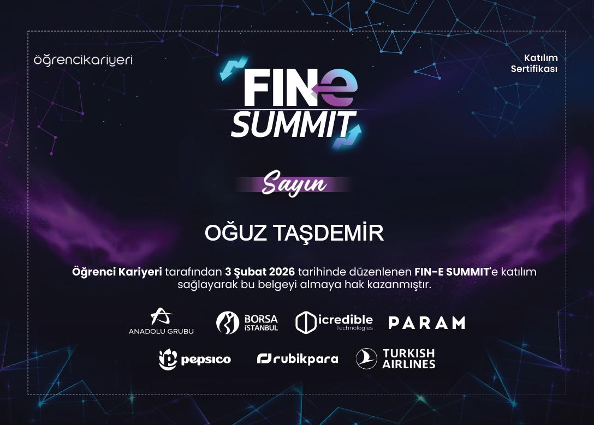
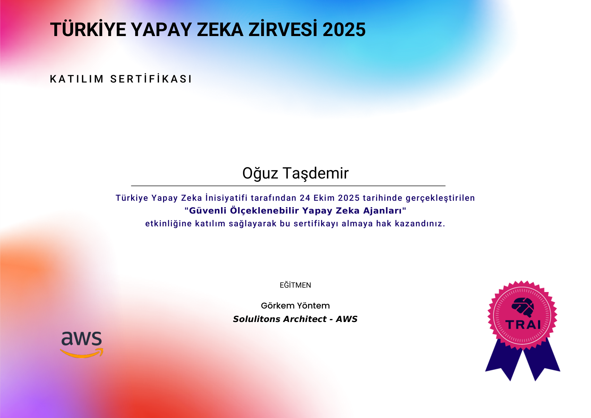
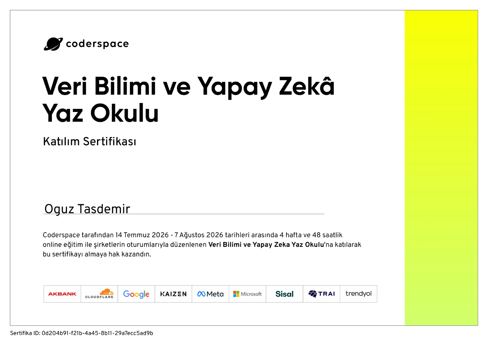
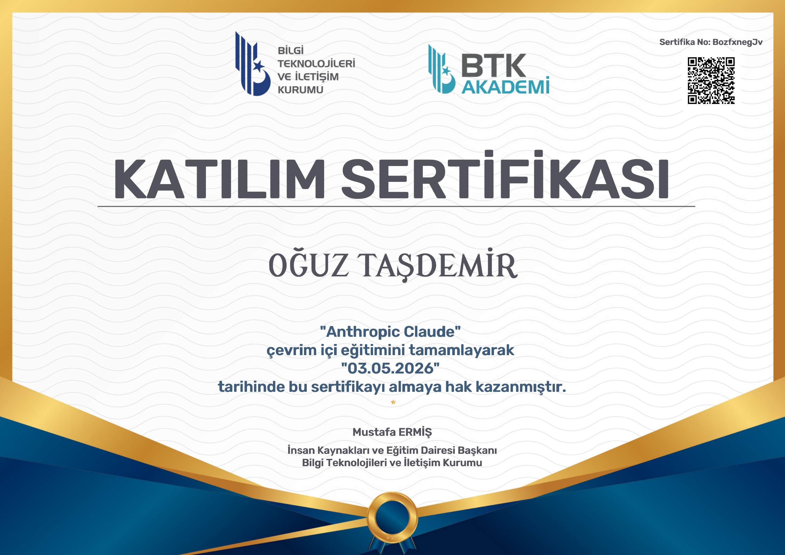
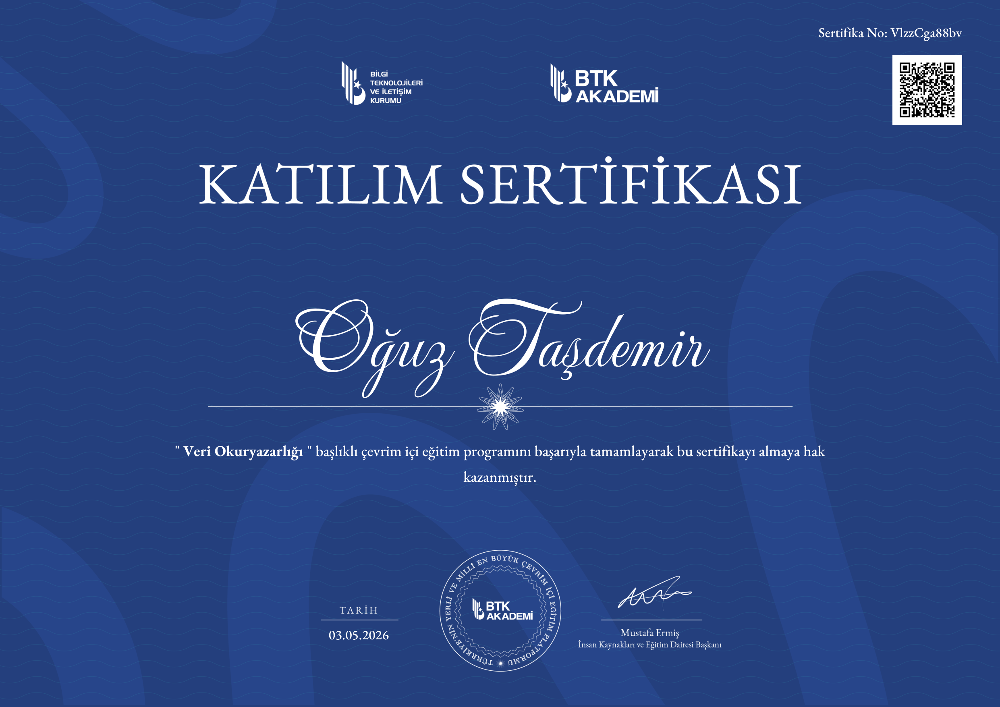
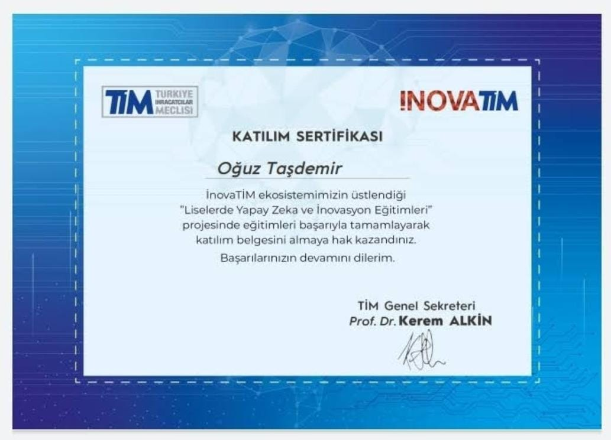
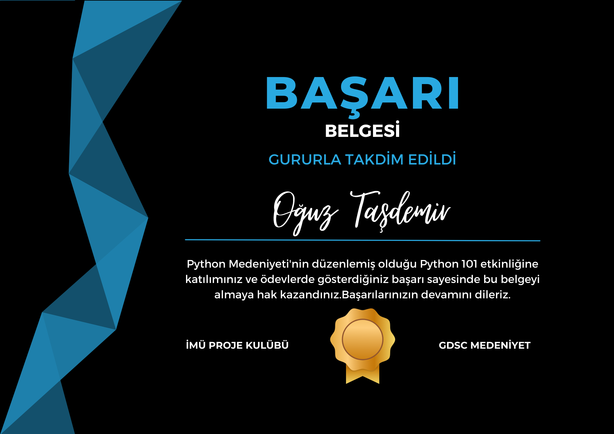

Sertifika Önizleme
Bu platform; geliştirdiğim projeleri, çözülen gerçek saha problemlerini, düşük seviyeli donanım protokollerini ve otonom yapay zeka ajanlarını teknik şeffaflıkla sunan interaktif bir çalışma konsoludur. Geliştirilen yeni projeler ve sistem mimarileri düzenli olarak buraya dahil edilir.
Yerel LLM motorları (Llama-3, DeepSeek), ChromaDB RAG hafızası, YouTube video transkript madenciliği ve çok katmanlı otonom kodlama asistanları.
Kendi işlettiğimiz markette 7/24 kesintisiz çalışan, sıfır veri kaybı garantili SQLite WAL mimarili ve donanım protokol entegreli masaüstü sistemler.
Ham disk sektör taraması (raw carving) ile adli veri kurtarma, Wi-Fi üzerinden P2P yüksek hızlı yerel transfer ve CNC G-Code ayrıştırıcıları.
Lisans matematik analitik altyapısıyla geliştirilen kredi risk sınıflandırması, Optuna hiperparametre optimizasyonu ve parametrik 3D yüzey üretimi.
GitHub üzerinde kodları ve mimarisi incelenebilir, sahada aktif kullanılan veya akademik olarak test edilmiş açık kaynak çözümler.
612 BIST şirketinin 10 yıllık çeyreklik bilançolarını otonom toplayan, TCMB kurlarıyla enflasyondan arındıran ve 7 sektörde kârlılık yönünü (%68.8) ve kâr-zararı (%79.5) öngören lisans tezi platformu.
Kendi işlettiğimiz markette 7/24 kullanılan, seri barkod okuyan, termal yazıcıya anında fiş basan ve kilitlenme yaratmayan SQLite WAL mimarili sistem.
Aynı Wi-Fi ağındaki bilgisayar ve telefonlar arasında internet kotası tüketmeden, kablosuz tarayıcı üzerinden dosya transferi sağlayan yerel ağ paylaşım aracı.
Müşterilerin finansal alışkanlıklarını, borç oranlarını ve hesap hareketlerini inceleyerek kredi risk düzeyini yüksek doğrulukla tahmin eden makine öğrenmesi modeli.
Bozuk veya yanlışlıkla biçimlendirilmiş harici disk ve flaş belleklerden, doğrudan ham sektör taraması (raw carving) yaparak görsel ve belgeleri kurtaran araç.
Büyük dil ve difüzyon modellerini internet kopmalarına karşı dirençli, çok kanallı ve devam ettirilebilir (resume) mimariyle yerel diske indiren GUI aracı.
Yerel yapay zeka ajanları, çok modlu RAG mimarileri, sanal tarayıcı orkestrasyonu ve tescilli derin öğrenme boru hatları.
İnternet bağlantısına ihtiyaç duymadan çalışan; kaynak kodları, teknik PDF belgeleri indeksleyen, YouTube video araması ve web navigasyonu yapan otonom asistan.
Çizgi hikayelerin panel akışlarını ve anlatı yapısını analiz eden; konuşma balonlarını arındırıp LoRA ve üretken yapay zeka ile görsel sahneler türeten analitik hat.
Yazılım hedeflerini yerel LLM ile analiz edip DAG bağımlılık ağaçlarına bölen ve GitHub Projects & Issues ile çift yönlü senkronize eden otonom planlama istasyonu.
İzole Chromium oturumlarını WebSocket üzerinden düşük gecikmeli canlı yayına dönüştüren, paylaşımlı gezinme ve anti-bot bypass yeteneklerine sahip sanal tarayıcı motoru.
Kripto para piyasalarında stratejileri test eden, internet haber akışlarını ve piyasa duyarlılığını tarayarak makine öğrenmesiyle fiyat trendlerini analiz eden sistem.
Yerel GPU/VRAM kaynaklarını optimize ederek Stable Diffusion / SDXL modelleriyle Text-to-Image ve Inpainting süreçlerini yöneten modern görsel stüdyosu.
Yapay zeka ajanları, LLM mimarileri, veri bilimi ve kurumsal bulut alanlarında tamamladığım resmi belgeler. Sağa-sola kaydırarak inceleyebilirsiniz.

Finansal teknolojiler, borsa ekosistemi ve dijital dönüşüm zirvesi.

Kurumsal yapay zeka ajan mimarileri, güvenlik ve ölçekleme prensipleri.

48 saatlik kapsamlı veri bilimi, makine öğrenmesi ve sektör uygulamaları.
Google Gemini pazarlama ve üretken yapay zeka modelleri entegrasyonu.

Prompt mühendisliği, model parametreleri ve API entegrasyon prensipleri.
Difüzyon modelleri, GAN mimarileri ve transformatör tabanlı üretkenlik.

Veri analitiği temelleri, analitik düşünme ve manipülasyon teknikleri.

Lise döneminde Arduino, robotik ve erken dönem inovasyon sertifikası.

Üniversite bünyesinde temel veri yapıları, algoritmalar ve nesne yönelimli programlama.
Açık kaynak yazılımlar ve geliştirme aşamasındaki özel yapay zeka & sistem mimarileri.
İstanbul Medeniyet Üniversitesi Matematik Bölümü mezunuyum (2026). Küçük yaşlarda oyun minigameleri kodlayarak başladığım yazılım yolculuğuma; donanım devreleri, veri otomasyonu, optimize masaüstü sistemleri ve ağırlıklı olarak Yapay Zeka & Makine Öğrenmesi çözümleri geliştirerek devam ediyorum.
Yazılıma ilk olarak 2013 yılında Lua diliyle oyun minigameleri kodlayarak başladım. Yazdığım kodun oyunda doğrudan çalıştığını görmek çok hoşuma gitmişti; algoritma mantığını ve kod yapısını bu sayede küçük yaşta öğrendim.
2018'de lise 3. sınıftayken okulumuza Türk-Alman Üniversitesi Mekatronik Bölümü'nden iki abla gelip bize robotik kodlama eğitimi verdi. Arduino ve devrelerle ilk defa o zaman tanıştım. Sensörler, motorlar ve devre kartlarıyla çalışarak yazılımın fiziksel parçalarla nasıl haberleştiğini gördüm.
Daha sonra İstanbul Medeniyet Üniversitesi Matematik Bölümü'ne girdim. Burada aldığım matematik eğitimi, yazılım tarafında özellikle veri yapılarını ve algoritmaları daha mantıklı ve sağlam kurmamı sağladı.
2021 sonrasında ise doğrudan işe yarayan somut projelere odaklandım. Python ile web scraping ve veri otomasyonları geliştirmenin yanı sıra; veri tabanı mimarisi, donanım entegrasyonları, termal yazıcı protokolleri (ESC/POS, ZPL) ve yüksek performanslı masaüstü sistemleri geliştirmeye ağırlık verdim.
Zamanla sistem ve yazılım tecrübemi matematik altyapımla birleştirerek Yapay Zeka ve Makine Öğrenmesi alanına yöneldim. Özellikle internete kapalı (offline) yerel ortamlarda çalışan açık kaynak dil modelleri (LLM), semantik arama ve RAG mimarileri, veri sınıflandırma ve makine öğrenmesi modelleri üzerine çalışarak kendimi bu alanda geliştirdim. Şu anda da ağırlıklı olarak yapay zeka destekli akıllı araçlar ve optimize edilmiş masaüstü sistemleri üretiyorum.
Lua diliyle çeşitli oyun minigameleri kodlayarak mantıksal algoritma kurgusunu, değişken yönetimini ve kodlama yapısını benimsedim.
Lise 3. sınıfta Türk-Alman Üniversitesi Mekatronik Bölümü öğrencilerinin okulumuzda verdiği robotik eğitimle Arduino dünyasına adım attım; sensör okuma ve mikrodenetleyici düzeyinde ilk fiziksel projelerimi ürettim.
İstanbul Medeniyet Üniversitesi Matematik lisans eğitimiyle paralel olarak; Python ile web scraping (Selenium, BeautifulSoup), veri manipülasyonu ve otomasyon botları geliştirdim.
Yüksek hızlı barkodlu satış, SQLite WAL veri tabanı mimarisi, termal yazıcı protokolleri (ESC/POS) ve donanım haberleşmesine odaklanan masaüstü sistem çözümleri geliştirdim.
Yerel açık kaynak dil modelleri (LLM), RAG (Retrieval-Augmented Generation) tabanlı bilgi sistemleri, makine öğrenmesi modelleri ve bunları destekleyen optimize kurumsal masaüstü araçları üzerine çalışıyorum.
İş teklifleri, projeler veya doğrudan iletişim için aşağıdaki kanallardan ulaşabilirsiniz:
Yapay zeka, üretken dil modelleri, bulut ajanları, veri bilimi ve fintek alanlarında tamamladığım sertifikalar ve katılım belgeleri. Belgeleri büyütmek ve ayrıntılarını görmek için kartların üzerine tıklayabilirsiniz.
3 Şubat 2026. Finansal teknolojiler, borsa ekosistemi, dijital varlıklar ve yeni nesil finansal dönüşüm oturumları katılım belgesi.
Eğitmen: Görkem Yöntem (Solutions Architect, AWS). Kurumsal AI agent mimarileri, güvenlik ve ölçekleme prensipleri.
4 hafta / 48 saatlik kapsamlı veri bilimi, makine öğrenmesi ve sektör uygulamaları eğitimi.
Eğitmen: Can Franko (Google Ads & Gemini Marketing Manager). Üretken yapay zeka modelleri ve kullanım alanları.
Sertifika No: BozfxnegJv. Claude model mimarisi, prompt optimizasyonu ve büyük dil modeli entegrasyonu.
Sertifika No: PVghM8kNKr. Üretken derin öğrenme, difüzyon ve transformatör modelleri.
Sertifika No: VlzzCga88bv. Veri madenciliği temelleri, analitik düşünme ve veri manipülasyonu.
Lise 3. sınıfta Arduino, robotik kodlama ve erken dönem teknoloji inovasyonu üzerine aldığım katılım belgesi.
Python Medeniyeti & GDSC bünyesinde algoritma geliştirme ve teknik proje uygulamaları başarı belgesi.
Projelerim hakkında hata bildirimi (bug), yeni geliştirme veya mimari önerisi, iş birliği veya kariyer fırsatları için dilediğiniz zaman ulaşabilirsiniz. Tüm geri bildirim ve fikirlere açığım.
Geliştirdiğim açık kaynak ve Ar-Ge sistemlerinde gördüğünüz bir optimizasyon açığı, algoritma iyileştirmesi veya birlikte geliştirebileceğimiz yeni bir proje fikri varsa e-posta veya LinkedIn üzerinden doğrudan yazabilirsiniz.